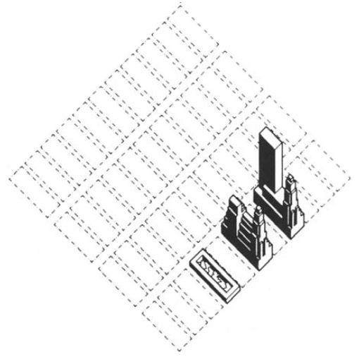
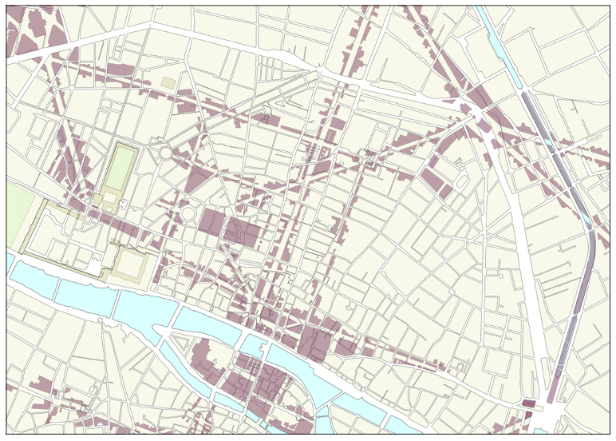
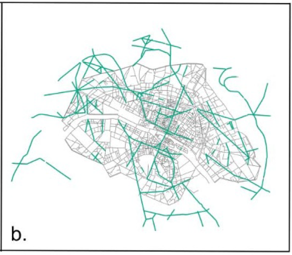
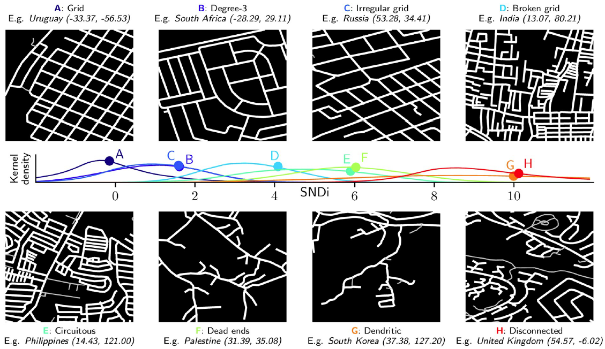
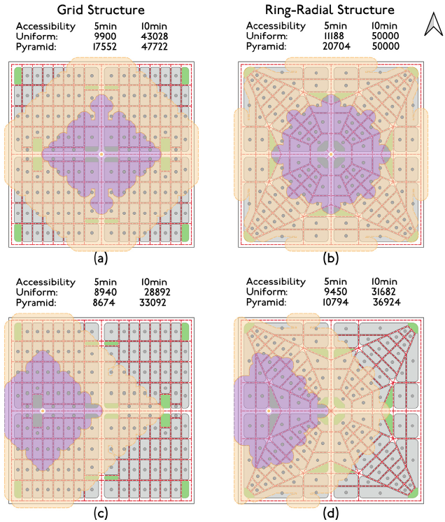
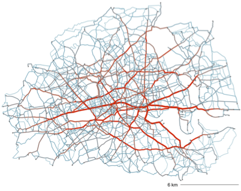
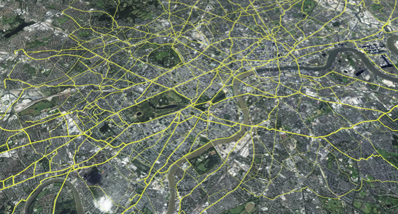
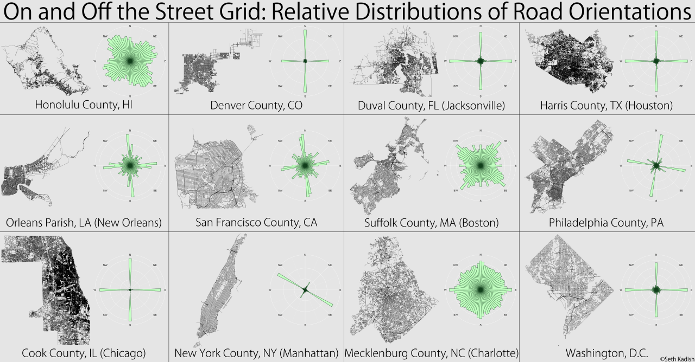

The grid as generator
‘Either because the street grid evolved from bottom-up processes in primitive villages or originated from top-down urban planning, the layout of streets sets out the rules that provide a fundamental spatial structure of urban form and its evolution’. ‘From a historical perspective, the first planned street pattern was the chess-board grid. As early as 2,500 BC, the grid layout originated as a solution to easily, quickly and efficiently establish a workers’ village in the Nile valley (Morris, 1967a).It was further developed by the “father of town planning” –the Greek architect Hippodamus– as a tool to plan the reconstruction of an entire cities (Morris, 1967a, p.843). Later, it was systematised by the Romans as two main cross streets –Cardus and Decumanus– which constituted the basis for laying out legionary camps and the planned provincial cities of the empire’1. Remarkably, the grid as a tool not only is present in South and North American cities attributed to their colonial legacy but also was implemented later in the 1800s as the underlying framework for urban growth in the cases of New York and Barcelona. The influence of the street grid is on both the plot pattern and building arrangements.

The transformation of street grids
The relevance of street grids as a key urban structuring framework today relies on the resistance to change that streets grids have given underlying land ownership structures. With few exceptions, in today’s cities it would highly conflicting and controversial to overlay a new grid over the existing given that it would most likely affect private property and buildings. Therefore, projects such as the modern renovation of Paris which superimposed a new structuring framework by creating new streets that modified its medieval structure are less viable.


Grids and transport accessibility
The resilience of street patterns and the difficulty of large-scale urban renovations that are able to change the structuring framework imposed by the street grid makes the study of them an interesting subject. Particularly, in relation to the development of sustainable future plans. Research has shown that disconnected urban networks are associated with greater vehicle travel, energy use and emissions. A quantitative evaluation of the connectedness of street grids globally allows to identify 8 street-network types from the regular grid to areas with high number of deadends.

From the perspective of public transport provision and walking access to transit stops, a regular grid structure provides less accessibility than a ring-radial grid structure even accounting for different density levels (uniform and pyramidal).

Given the rigidity imposed by existing grids the opportunity for urban and transport interventions that are both sustainable and that improve accessibility can be explored from the identification of latent boulevards or urban corridors in existing street grids. An exercise using shortest-path analysis to connect railway an underground stations identified critical routes or potential ‘boulevards’ that could transform inner London using the existing street grid and without the need of Haussmann-style demolitions but instead by re-allocating streetspace.


Visualising street grids at scale
A quite useful way to visualise street grids is using polar histograms of street orientations. This method counts the number of roads segments fall into 360 degres ranges. Later the method was extended adding entropy metrics to account for city’s street’s order and disorder using OSM data. Furthermore, a couple of interactive tools allow to explore this concept worldwide: a mapbox-based one and a javascript-based one.

For this visualisation exercise I compare 3 paradigmatic street grids and contrast them with 9 South American cities. I employed the osmnextact and sfnetwork packages in R to download OSM data and measure street orientation. The measure of entropy indicates the amount of information of a given set. Higher entropy (Salvador, Bahia) indicates a more diverse grid assemble according to street orientations and the opposite applies to lower entropy (Montevideo). It is interesting to observe that variations of street grids (changes of colour) not only might denote the influence of geographical features (rivers or hills) but also different periods of urban growth (e.g. gridiron pattern in the historical centres of South American cities). The code developed for this exercise can allow further exploration of street grids at metropolitan scale for neighbourhoods identification (superblocks), street grids concordance with metropolitan scale corridors or at continental scale for the examining the Spanish colonial legacy in Latin American cities.

Footnotes
Rethinking Streets: a study of streetspace allocation metrics and street networks in London↩︎
Martin, L. (2000) ‘The grid as generator’, arq: Architectural Research Quarterly, 4(4), pp. 309–322. Available at: https://doi.org/10.1017/S1359135500000403.↩︎
Barthelemy, M. et al. (2013) ‘Self-organization versus top-down planning in the evolution of a city’, Scientific Reports, 3, p. 2153. Available at: https://doi.org/10.1038/srep02153.↩︎
Barrington-Leigh, C. and Millard-Ball, A. (2019) ‘A global assessment of street-network sprawl’, PLOS ONE. Edited by H. Kato, 14(11), p. e0223078. Available at: https://doi.org/10.1371/journal.pone.0223078.↩︎
Lahoorpoor, B. et al. (2022) ‘Access-oriented design? Disentangling the effect of land use and transport network on accessibility’, Transportation Research Interdisciplinary Perspectives, 13, p. 100536. Available at: https://doi.org/10.1016/j.trip.2021.100536.↩︎
Palominos, N., Smith, D.A. and Griffiths, S. (2021) ‘Identifying and Characterising Active Travel Corridors for London in Response to Covid-19 Using Shortest Path and Streetspace Analysis’, in S.-L. Shaw and D. Sui (eds) Mapping COVID-19 in Space and Time: Understanding the Spatial and Temporal Dynamics of a Global Pandemic. Cham: Springer International Publishing (Human Dynamics in Smart Cities), pp. 191–216. Available at: https://doi.org/10.1007/978-3-030-72808-3_10.↩︎
author↩︎
Citation
@online{palominos2022,
author = {Nicolas Palominos},
title = {Street Grids},
date = {2022-08},
url = {https://nicolaspalominos.netlify.app/posts/street-grids/},
langid = {en}
}